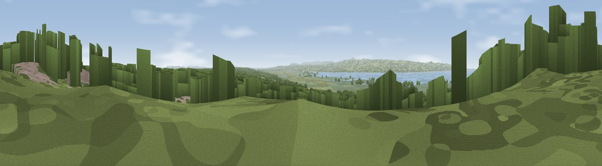

Viewpoint near Gayton
#17161 in England · top 31% of its area beats it · near Gayton · access?Where it is
The exact computed spot (SJ 27225 81150). Click the marker for map links.
Public access: no public right of way or access land is recorded at this exact spot — it may be on private land. Computed from Natural England's CRoW access layer and OpenStreetMap rights of way — not the legal definitive map. Always verify locally.
The view, rendered

A 360° render of this exact spot computed from the terrain model, tree cover and land cover — summer colours, afternoon light, calibrated against photographs of famous viewpoints. Real trees, hedges and buildings will differ in detail.
The panorama
Grey silhouette: terrain skyline in each direction (720 bearings, Earth curvature and refraction included). Dashed green: skyline with trees (+15 m) and buildings (+8 m) as obstacles. Blue strip: how far the ground is visible on each bearing.
Where the view opens
Wedge length = distance to the farthest visible ground on that bearing (vegetation-aware). Rings at 10, 25 and 50 km.
What fills the view
60% woodland · 19% grassland · 6% built-up · 6% water · 5% wetland · 3% cropland
Angular shares of the visible panorama (visual magnitude), not map area. Landscape diversity 0.54 (0–1 Shannon).
Key numbers
More beautiful places nearby
The staircase of upgrades: each row has a higher view potential than everything closer. Driving times are estimates from straight-line distance, calibrated against real road routing — check an actual route before setting out.
| Place | Direction | Drive | Score |
|---|---|---|---|
| Viewpoint near Thurstaston | NW · 3 km | ~7 min | 62.1 |
| Thurstaston Hill | NW · 4 km | ~10 min | 65.1 |
| Viewpoint near Caldy | NW · 7 km | ~14 min | 68.0 |
| Helsby Hill | ESE · 23 km | ~37 min | 74.6 |
| Viewpoint near Harthill | SE · 35 km | ~54 min | 80.5 |
| Rivington Pike | NE · 49 km | ~70 min | 81.9 |
| White Brow | NE · 50 km | ~71 min | 82.9 |
| Viewpoint near Halfway House | S · 68 km | ~91 min | 83.3 |
53.32225, -3.09401 · source: screening · position refined by local search. Computed location — check access rights before visiting.